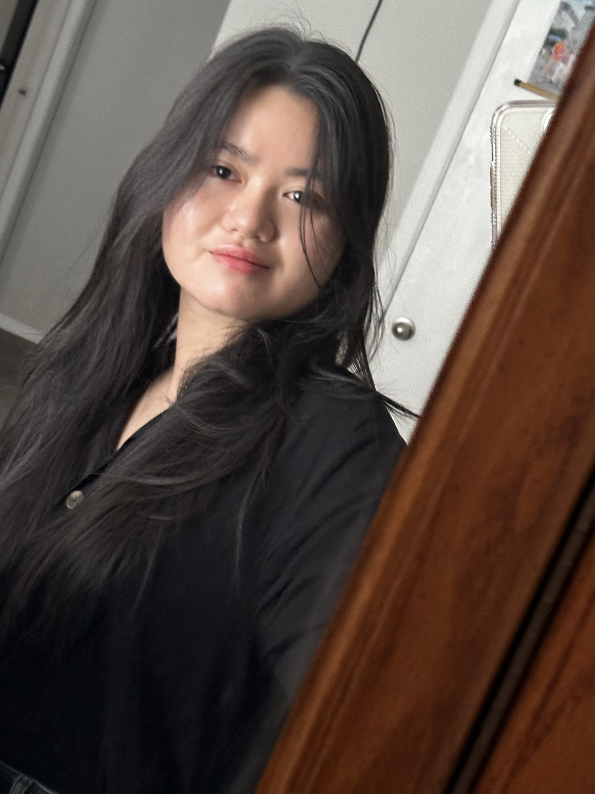

Education
- 2025 Started Computer Engineering program at Texas A&M University
Introduction
I am passionate about building technology that connects software, hardware, and art. I enjoy developing software that solves real problems, exploring hardware systems to understand how things work at a deeper level, and using visual design to make ideas clear, creative, and human-centered.
github.com/btklinhbong
tongkhanhlinhbui@tamu.edu
linkedin.com/in/tong-khanh-linh-bui
Java · Verilog · C · C++ · CSS · HTML · JavaScript
2026
Built interactive websites and game projects, focusing on clean UI, user experience, and frontend implementation.
2025
Built coursework and personal projects using Java, Verilog, C, C++, HTML, CSS, and JavaScript.
2024
Built a C++ system to manage a book library, including features for organizing records and tracking items.
2024
Aug 2024 - Dec 2024 | Texas, United States (On-site). Created and led semester-long events, including games and cultural showcases, to bring together students from different backgrounds.
2020-2023
Aug 2020 - Nov 2023 | Arlington, Texas, United States (On-site). Operated live streaming, audio, and music control systems for weekly services attended by 300+ people, maintaining 100% uptime through proactive troubleshooting.
2020-2022
Aug 2020 - Jun 2022 | North Richland Hills, Texas, United States (On-site). Provided classroom tech support and led Java-based projects aligned with AP CS curriculum. Qualified for a regional CS competition and designed a club logo used by 30+ members.
English
Vietnamese
COOL Club leadership
Cultural event planning
Drawing and illustration
Shrink plastic crafts
Hologram and 3D printing
Piano